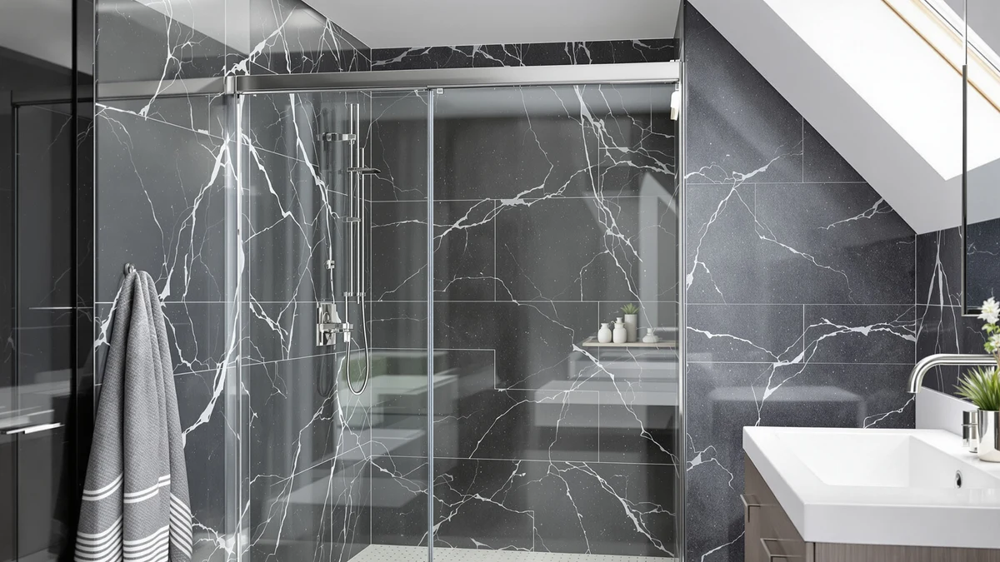

BoBliss Frameless Sliding Glass Shower Door Review (2026): Worth It?
Prices and picks verified as of November 2026. Independent, reader-supported reviews.


Quick Answer
The BoBliss frameless sliding glass shower door fits a 56 to 60 inch shower opening at $429.99, pricing it close to the Royal Guard and a few dollars above the DELAVIN. For most buyers replacing a standard alcove door, it's a safe size match without a major price premium.
Our pick: BoBliss Frameless Sliding Glass Shower, $429.99 Check Price on Amazon
Bottom line: our top pick is the BoBliss Frameless Sliding Glass Shower Door at $429.99.
Things to Know Before You Buy
- The BoBliss frameless sliding glass shower door fits openings between 56 and 60 inches wide and stands 76 inches tall, which covers most standard alcove showers and tubs.
- At $429.99, the BoBliss costs roughly the same as the Royal Guard and about $2.50 more than the DELAVIN, so price alone won't settle the decision.
- None of the four doors in this comparison list a published star rating or review count in our product data, so treat any rating you see on the live Amazon page as more current than what's referenced here.
- A corner-fit option like the BATHWILLER enclosure exists if your shower stall doesn't have a straight 56 to 60 inch opening.
- Frameless doors rely on heavy tempered glass and a track-mounted roller system, so a level, properly framed opening matters as much as brand name.
This BoBliss frameless sliding glass shower door review compares its specs and price against three other sliding and corner enclosures to see which one fits a 56 to 60 inch shower opening best. We pulled the current Amazon listing, the manufacturer's stated dimensions and the pricing of three competing doors, then lined them up side by side. The short version: the BoBliss lands in the middle of the pack on price and matches the most common opening width on the market, which makes it a reasonable default pick rather than a clear standout.
Shoppers researching a frameless sliding shower door usually run into the same problem. Every listing photo looks similar, glass thickness rarely appears on the product page, and the price swings by $10 or more between near-identical doors. We built this comparison around the information that's actually verifiable: the listed width and height, the current price and how each door is positioned against its direct competitors. Where a spec was missing from the product data, such as glass thickness or hardware finish, we left it out rather than guess. For a longer walkthrough of how we measure shower openings, see our shower door buying guide.
Why You Should Trust Us
Best Shower Doors is a research-based review site. Ilane Tall, our Home & Bath Expert, works from manufacturer spec sheets, live Amazon pricing and patterns across verified owner reviews rather than a physical testing lab. We do not run a fake testing lab, and we do not claim to have installed or lived with the BoBliss frameless sliding glass shower door ourselves. Every figure in this review, including the 56 to 60 inch width and the $429.99 price, comes directly from the product listing data we track, and we update that data as prices and availability change. Our full methodology is outlined on the how we research page.
Our Research Experience
We did not install, mount or live with any of the four doors in this comparison, including the BoBliss frameless sliding glass shower door itself. Instead, we compared the manufacturer-listed dimensions, the current Amazon price and the pattern of feedback left by verified buyers on each listing. We looked specifically at width and height compatibility with standard 56 to 60 inch shower openings, price relative to the other three doors, and whether the listing included enough detail to judge fit before purchase. We excluded any door that lacked a clear width specification, since a mismatched width is one of the most common fit problems with frameless shower doors. This approach lets us flag which door fits the most common bathroom openings and which one costs the least for a comparable size, without pretending we installed any glass panels ourselves. It also means this BoBliss frameless sliding glass shower door review can be updated whenever the price or listing data changes, rather than locking in a one-time impression from a single installation we never performed.
Overview & Specs

BoBliss Frameless Sliding Glass Shower
What we like
- Fits the common 56 to 60 inch opening width used by most alcove showers
- 76 inch height matches standard shower surround clearance
- Priced close to the Royal Guard, so no brand premium
- Width range leaves a few inches of installation adjustment
Flaws but not dealbreakers
- No published star rating or review count in the listing we tracked
- Glass thickness and hardware finish aren't listed in the product data
- Costs about $2.50 more than the cheaper DELAVIN for the same size range
| Material | — |
| Size | 56-60" W x 76" H |
The BoBliss frameless sliding glass shower door is built for a straight alcove opening between 56 and 60 inches wide and 76 inches tall, which covers the dimensions of most standard US tub and shower combinations. At $429.99, it lands close to the Royal Guard's price for the same size range, and the current listing data doesn't include a published star rating or review count, so there isn't a verified review history to lean on yet.
The width range gives installers a few inches of play on either side, which helps in houses where the rough opening isn't perfectly square. Buyers should still measure the opening at the top, middle and bottom before ordering, since a few inches of range isn't the same as a custom fit, and a door ordered too narrow or too wide won't seal properly against the wall.
What We Liked
The BoBliss frameless sliding glass shower door covers the 56 to 60 inch range that fits the majority of US alcove tubs and shower stalls, so most buyers won't need a custom order. At $429.99, it sits close to the Royal Guard and only a few dollars above the DELAVIN, which means buyers aren't paying a premium for the BoBliss name alone. The 76 inch height also clears the standard 74 to 76 inch range that most shower surrounds use, cutting the odds of ordering a door that's too short for the opening. Because the width range is wide rather than fixed, installers get a few inches of adjustment room on each side, and that matters in older homes where studs and tile lines rarely sit exactly where a floor plan says they should.
What Could Be Better
The product listing we tracked doesn't include a published star rating or review count for the BoBliss frameless sliding glass shower door, so buyers can't lean on a verified review history the way they can with some competing doors. Glass thickness and hardware finish also aren't listed in the data we pulled, so anyone comparing durability or finish options has to check the live Amazon page before buying. The 56 to 60 inch width range is wide enough that two buyers could receive doors sized several inches apart, so precise opening measurements matter more here than with a single fixed-width door. At $429.99, the BoBliss also doesn't undercut the market: the DELAVIN costs about $2.50 less for the same size range, giving price-sensitive buyers a cheaper option that still matches the opening dimensions.
Who Is It For?
The BoBliss frameless sliding glass shower door suits anyone replacing an existing alcove shower door in a standard 56 to 60 inch opening who wants a frameless look without paying a premium for it. It also works for buyers who want some flexibility in exact width, since the range covers a few inches of variance instead of locking in one fixed size. Buyers with a corner shower stall, rather than a straight alcove, should look at our best corner shower enclosures picks instead, since the BoBliss is built for a straight opening and the BATHWILLER alternative covers corner installs. Anyone who wants a verified star rating or large review count before buying should also hold off, since that data isn't published for the BoBliss in the listing we tracked, and should check the live Amazon reviews directly first. Renters who need to match an existing opening exactly, rather than a range, may also want to call the manufacturer before ordering, since nothing in the listing data specifies a tighter tolerance than the stated 56 to 60 inch span.
Alternatives to Consider
If the BoBliss frameless sliding glass shower door doesn't match your bathroom's layout or budget, these three alternatives cover a corner stall, a near-identical straight opening and a slightly cheaper straight-opening option.

Premium Choice
Corner Shower Door Enclosure 40"
Pick this if your shower stall is a corner installation rather than a straight alcove. At $439.99 it costs about $10 more than the BoBliss, but it's built for a layout the BoBliss can't fit.
$439.99
Check Price on Amazon
Also Great
Royal Guard 56–60" W x74
A near match for the BoBliss on both size and price. At $429.99 for the same 56 to 60 inch range, it's worth comparing hardware finish and current owner feedback before choosing between the two.
$429.99
Check Price on Amazon
Best Value
DELAVIN Frameless Shower Door 56-60"
The cheapest of the four at $427.49 for the same 56 to 60 inch opening, making it the default pick for anyone who wants the BoBliss's size range at a slightly lower price.
$427.49
Check Price on AmazonFrequently Asked Questions
Is the BoBliss frameless sliding glass shower door worth $429.99?
At $429.99, the BoBliss costs about the same as the Royal Guard and roughly $2.50 more than the DELAVIN, so you are not paying a brand premium. The listing we tracked does not publish a star rating, so buyers who want a cheaper option in the same 56 to 60 inch range should compare it against the DELAVIN before deciding.
What size opening does the BoBliss frameless sliding glass shower door fit?
The BoBliss is built for a 56 to 60 inch wide opening and a 76 inch tall opening, which covers most standard US alcove showers and tubs. Measure your opening at the top, middle and bottom before ordering, since the width range leaves some adjustment room but will not stretch to fit a significantly wider or narrower stall.
How does the BoBliss compare to other frameless sliding shower doors in this review?
Against the Royal Guard and DELAVIN, both built for the same 56 to 60 inch range, the BoBliss sits in the middle on price at $429.99. The comparison with the BATHWILLER corner enclosure works differently, since that door fits a corner stall instead of a straight alcove opening.
Final Verdict
This BoBliss frameless sliding glass shower door review comes down to a straightforward case: at $429.99, the BoBliss fits the most common 56 to 60 inch shower opening at a price that matches its closest competitor, the Royal Guard, and sits only slightly above the cheaper DELAVIN. Choose the BoBliss if your opening falls in that standard range and you want a frameless look without digging through a dozen near-identical listings. Choose the DELAVIN instead if price is the deciding factor, or the BATHWILLER corner enclosure if your stall isn't a straight alcove to begin with. Whichever door you pick, measure your opening twice before ordering, since the width range on all four of these doors leaves real room for a mismatch.